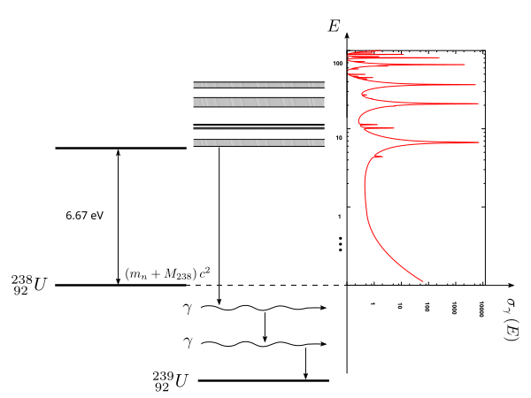
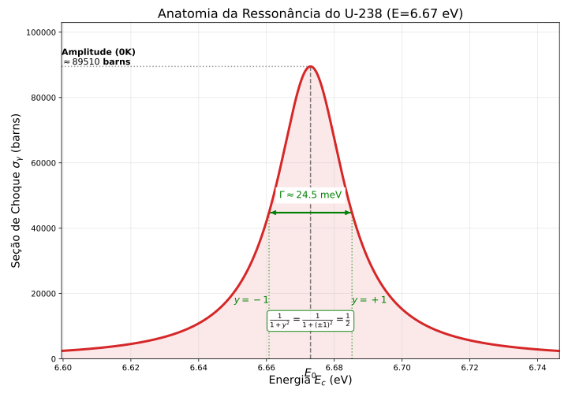

Captura Radiativa
As reações de captura radiativa são extremamente significativas para a análise de reatores por um motivo simples e direto: elas removem nêutrons da reação em cadeia, e eventualmente - direta ou indiretamente - pode adicionar elementos físseis ou neutrons no sistema. É um termo de sumidouro, em primeira aproximação, no nosso balanço de nêutrons.
Captura Radiativa: Sumidouro Imediato, Fonte Latente
1. O Aspecto “Sumidouro” (Curto Prazo)
No instante da reação, a captura radiativa é puramente parasita para o balanço de nêutrons térmicos.
- Mecanismo: O nêutron é absorvido e não causa fissão.
- Consequência: O fator de multiplicação () diminui.
- Exemplo: Captura no Ferro das estruturas, na água (H-1) ou no Xe-135 (veneno).
2. O Aspecto “Precursor” (Longo Prazo)
A captura pode “adicionar elementos físseis ou nêutrons”. Isso ocorre através da transmutação nuclear seguida de decaimentos beta. O nêutron “perdido” hoje é um investimento para criar combustível para amanhã.
Isso introduz o conceito de Material Fértil: isótopos que não fissionam com nêutrons térmicos, mas que, após capturarem um nêutron, transformam-se em isótopos físseis.
Exemplo A: A Cadeia Urânio-Plutônio (O mais comum)
O U-238 é o material fértil mais abundante em reatores PWR/BWR.
- Captura: O U-238 captura um nêutron (muitas vezes nas ressonâncias) e vira U-239.
- Decaimento 1: O U-239 é instável ( min) e decai beta para Netúnio.
- Decaimento 2: O Np-239 decai ( dias) para Plutônio-239.
Criamos Pu-239, um isótopo físsil excelente. Quando este Pu-239 fissionar no futuro, ele liberará nêutrons. Portanto, a captura original “adicionou” indiretamente nêutrons e combustível ao sistema.
Exemplo B: A Cadeia do Tório
O Tório-232 é outro material fértil importante.
- O U-233 gerado é físsil e muito eficiente.
3. O Aspecto “Fonte Indireta” (Fotoneutrons)
A captura radiativa pode devolver nêutrons ao sistema através de uma reação secundária: a reação . Isso ocorre quando os raios gama (produzidos na captura ou no decaimento subsequente) atingem núcleos com baixa energia de ligação (Deutério ou Berílio).
O Mecanismo em Duas Etapas:
- Etapa 1 (Captura/Ativação): Um núcleo captura um nêutron e emite um raio gama de alta energia (imediato) ou torna-se radioativo e emite gammas ao decair (atrasado).
- Etapa 2 (Reação Fotoneutrônica): Esse raio gama atinge um núcleo de Deutério () ou Berílio (). Se a energia do gama for superior à energia de ligação destes núcleos ( MeV ou MeV, respectivamente), um nêutron é ejetado.
Importância Cinética: Em reatores a água pesada (), os produtos de fissão e materiais ativados por captura continuam emitindo gammas muito tempo após o desligamento. Esses gammas interagem com o moderador (Deutério) gerando nêutrons. Isso cria um grupo de “nêutrons atrasados” de vida muito longa, tornando a resposta do reator muito mais lenta e estável do que em reatores de água leve.
Tais reações procedem via formação de núcleo composto - no qual o nêutron incidente é primeiramente absorvido para formar o núcleo de número de massa . Subsequentemente, este núcleo decai emitindo uma cascata de raios gama de alta energia para atingir o estado fundamental.
Por essa razão, a dependência funcional da seção de choque de captura em relação à energia cinética do nêutron exibe um comportamento de ressonância vigoroso naquelas energias onde a energia no centro de massa () somada à energia de ligação do nêutron () coincide (“casa”) com um nível de energia excitado do núcleo composto.
Mostramos essa situação de ressonância esquematicamente para a captura de nêutrons no Urânio-238 () na figura abaixo.

Figura 1: Diagrama de níveis de energia da ressonância de captura no em eV.
Na figura, indicamos o diagrama de níveis de energia para o núcleo composto correspondente a uma das ressonâncias de baixa energia mais famosas, localizada em eV. Esta ressonância possui uma largura muito estreita, de apenas eV, mas um pico extremamente alto, atingindo vários milhares de barns.
O decaimento radiativo subsequente do núcleo composto é geralmente um processo em cascata, com o novo núcleo “saltando” para baixo através de vários níveis de energia, acompanhado pela emissão de múltiplos raios gama. Como os níveis excitados estão tipicamente na faixa de MeV, a energia total dos gamas emitidos será bastante grande.
A Fórmula de Breit-Wigner para Nível Único
Para ressonâncias (ou seja, níveis de energia) que estão espaçadas amplamente umas das outras — de modo que a cauda de uma não interfira no pico da outra —, é possível descrever a dependência energética da seção de choque de absorção por uma expressão analítica muito elegante conhecida como a Fórmula de Breit-Wigner de Nível Único.
Vamos abrir essa fórmula em detalhes:
Onde o termo representa o “desvio” ou a distância energética em relação ao pico da ressonância, normalizado pela largura da ressonância:
Nestas equações:
- é a energia onde a ressonância ocorre (o pico).
- é a chamada largura de linha total (ou apenas largura total) da ressonância. Ela caracteriza a largura do nível de energia e corresponde à largura total à meia altura (FWHM) da curva de ressonância.
- é a largura de radiação, que caracteriza essencialmente a probabilidade de que o núcleo composto decaia especificamente através da emissão de raios gama.
O termo é o valor da seção de choque total no pico da ressonância (em ) e pode ser escrito em termos do comprimento de onda reduzido do nêutron () na energia . A fórmula teórica para é:
$$
\sigma_{0} = 4\pi \bar{\lambda} _{0}^{2} g \frac{\Gamma_{n}}{\Gamma}
$$
Para facilitar os cálculos de engenharia, podemos substituir as constantes físicas e expressar isso de forma numérica prática:
Vamos decodificar os termos desta expressão de pico:
- é o fator estatístico de spin, dado por: Onde é o spin do núcleo alvo e é o spin total do núcleo composto.
- é a largura de nêutron, que representa a probabilidade de o núcleo composto decair reemitindo um nêutron (espalhamento elástico ressonante).
Um detalhe importante da física nuclear é que a largura de nêutron não é constante; ela varia com a raiz quadrada da energia:
Esboçamos a forma típica da curva de Breit-Wigner em função da energia cinética na Figura 2 abaixo.

Figura 2: Forma da ressonância de Breit-Wigner em função da energia.
Gráfico de Seção de Choque
Este script plota a seção de choque.
Detalhes:
1. Área Geométrica Quântica
Na teoria de Breit-Wigner, a seção de choque máxima teórica (no pico da ressonância, sem efeito Doppler) depende do comprimento de onda de de Broglie do nêutron (). A fórmula base para o pico é:
O termo chave aqui é a área geométrica quântica .
Para converter isso em termos de energia (), seguimos a seguinte cadeia de definições:
Relação de de Broglie: O comprimento de onda reduzido () conecta-se ao momento linear () por:
Energia Cinética: Classicamente, a energia do nêutron relaciona-se ao momento por:
Substituição: Combinando as duas equações acima, temos:
Como depende da energia (), podemos reescrever esse termo isolando as constantes:
Se você substituir as constantes físicas (massa do nêutron , constante de Planck ) e converter as unidades para barns () e eV, obtém-se uma constante numérica:
Ou seja, o número 2.608.000 é simplesmente o fator de conversão que diz “quão grande é a onda do nêutron” para uma dada energia.
2. Correção de Centro de Massa
O nêutron não bate em uma parede imóvel; ele bate em um núcleo que recua. A física quântica “enxerga” a colisão no sistema de Centro de Massa (CM), mas a energia que usamos ( eV) é medida no sistema de Laboratório.
Para corrigir isso, usamos a massa reduzida do sistema. A relação entre o comprimento de onda no CM e no Lab introduz um fator dependente da massa atômica do alvo (para o U-238, ):
Para o Urânio-238:
Está calculando:
Ao dividir esse valor pela energia da ressonância (), obtemos a área máxima teórica (em barns) que o nêutron pode “ver” naquela energia.
É crucial notar algumas aproximações e comportamentos assintóticos dessa fórmula:
-
Como a absorção ressonante é primariamente importante em núcleos pesados (onde é grande, então a massa do núcleo é muito maior que a do nêutron), geralmente podemos aproximar a energia do centro de massa pela energia do laboratório: .
-
Baixas Energias (): Longe do pico, na “cauda” esquerda da ressonância, a seção de choque decai com , o que equivale a um comportamento . É por isso que dizemos que muitos absorvedores são “absorvedores ” na região térmica.
-
Altas Energias (): Na cauda direita, a seção de choque cai muito rapidamente, proporcional a .
Também é importante notar que tais seções de choque de absorção são tipicamente muito maiores em baixas energias.
Conforme subimos na escala de energia, os níveis energéticos nos núcleos pesados tornam-se relativamente mais próximos uns dos outros. De fato, para energias acima de aproximadamente 1 keV em núcleos pesados como o , as ressonâncias de absorção tornam-se tão espaçadas e estreitas que não podem ser resolvidas (distinguidas individualmente) por medidas experimentais. Chamamos essa região de Região das Ressonâncias Não-Resolvidas. O tratamento da absorção de nêutrons nesta região é uma tarefa difícil, porém vital, na análise de reatores nucleares.